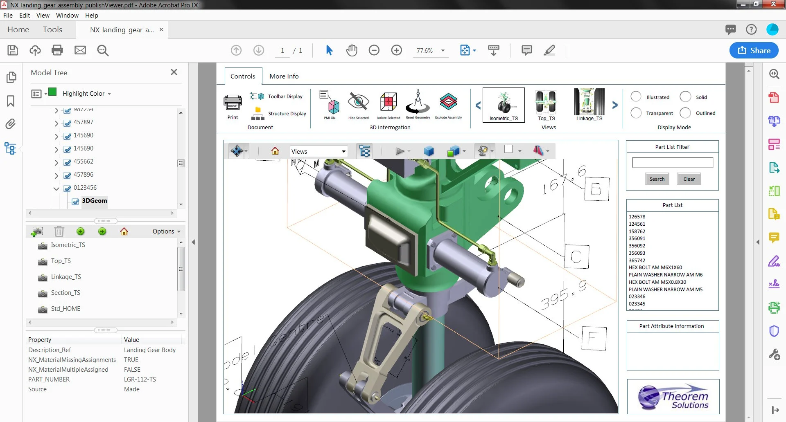

Work
Throughout my software engineering journey, I've constantly sought
opportunities to expand my skillset and tackle new challenges. Here,
I'd like to highlight some projects that allowed me to deepen my
skills and knowledge, allowing me to develop the skills to solve
problems creatively and efficiently.
SD-WAN Network Automation
SD-WAN (Software-Defined WAN) offers a dynamic network solution. It
intelligently routes traffic across diverse connections (MPLS,
internet, etc.) using software, not fixed configurations. This
translates to increased flexibility, improved application
performance by choosing the fastest path, and potential cost savings
through affordable options. Plus, SD-WAN simplifies management with
centralized control. It's a smarter way to connect your
geographically spread locations.
While SD-WAN offers significant benefits like improved network
performance and flexibility, manually configuring each device can be
a significant bottleneck. Imagine a network administrator tasked
with individually configuring hundreds of devices across
geographically dispersed locations. This repetitive, time-consuming
process is not only inefficient but also increases the risk of human
error. A single mistake in a complex configuration can lead to
connectivity issues, service disruptions, and even security
vulnerabilities across the entire network.
Thankfully, automation tools can streamline the SD-WAN configuration
process. By leveraging my expertise in Ansible, Python, YAML, Jinja,
and vendor-specific APIs, I developed an automation solution that
drastically reduced configuration times.
One hurdle in automating SD-WAN configuration was the lack of a
unified data model representing the network. This model would
provide the automation pipeline with the necessary configuration
values for each device.
To address this challenge, Nautobot was used as the network source
of truth. Nautobot, built using Django, includes a powerful
application called Design Builder, which allows different networks
to be modelled. I partnered with the network administration team to
design the network using Nautobot's Design Builder application. This
collaborative effort resulted in a centralized database of
configuration data, expediting configuration and ensuring
consistency across the network. This data could then be easily
queried using GraphQL by the automation scripts. By leveraging
automation tools and a centralized data model, I significantly
reduced configuration time and ensured error-free deployments,
ultimately improving the overall efficiency and reliability of the
SD-WAN network.
Unmanned Surface Vehicle
Medium Displacement Unmanned Surface Vehicles (MDUSVs) navigate the
seas without a crew. These high-tech vessels rely on GPS, radar, and
sensors to chart their course, making them ideal for long-duration
missions. From collecting ocean data to assisting in search and
rescue, MDUSVs offer a versatile and autonomous approach to tasks at
sea.
Extensive at-sea testing of MDUSVs is crucial for software
refinement and bug elimination. These tests generate vast amounts of
data logs (hundreds of gigabytes per event) from multiple sensor
systems, critical for understanding the automation's decision-making
process. However, not all data is valid or complete, and existing
tools hindered our data scientists' ability to efficiently remove
corrupt data and aggregate the valuable insights for analysis.
To address the challenge of processing massive datasets generated
during MDUSVs testing, I co-developed an internal suite of data
analysis software using Python and libraries like Pandas, NumPy, and
Matplotlib. This software tackles the inefficiency of existing tools
by ingesting data logs, intelligently removing corrupted entries,
and aggregating the cleaned data for streamlined analysis. It also
generates graphs and time series visualizations, empowering data
scientists to quickly identify periods of interest for further
investigation. This internal tool streamlines the data analysis
process, allowing data scientists to focus on extracting valuable
insights from the wealth of information collected during MDUSVs
testing. This experience highlights my ability to develop data
analysis solutions using Python and my understanding of the
challenges faced in big data processing.
Digital Thread

Digital Thread Additive Manufacturing (DTAM) streamlines additive
manufacturing (3D printing) by creating a single, connected flow of
data throughout the entire process. This "digital thread" links
design, modeling, printing, and even post-production, ensuring
everyone involved has access to the latest information. This leads
to improved efficiency, better quality control, and a smoother
workflow for complex 3D-printed parts. DTAM allows manufacturers to
trace materials, track progress, and optimize production for a more
robust and data-driven approach to additive manufacturing.
DTAM's system lacked a secure platform for collaboration and file
sharing, posing a challenge for authorized users working with 3D
components. Additionally, they encountered difficulties in packaging
specifications and 3D files into a single, unified PDF for easy
reference.
I helped design and develop a full-stack 3D file sharing website
using React, DRF, and Postgres. This platform allows authorized
users to share 3D files, along with corresponding part
specifications, facilitating collaboration and streamlined file
management. Furthermore, I championed the development of an
innovative feature: interactive 3D PDFs for component visualization.
These PDFs leverage custom LaTeX templates and embedded U3D models,
taking advantage of LaTeX's capabilities to generate dynamic 3D
content within the document, ultimately enhancing user experience
and accessibility. This experience honed my full-stack development
skills and solidified my passion for exploring new technologies to
enhance user experience.
Global Positioning and Navigation
Global Positioning and Navigation Systems (GPNS) rely on the NAVSTAR
GPS, a space-based system that continuously delivers global
position, velocity, and time data. NIWC Pacific supports the
Navigation Systems Program by providing engineering expertise and
conducting research to ensure the system's functionality and explore
future capabilities.
While meticulous testing and data analysis are paramount for
accurate positioning in satellite navigation systems, GPNS software
often relies on third-party tools for data validation, creating a
time-consuming and expensive process.
I joined a satellite testing software team for a three-month project
to address this inefficiency by implementing real-time data
analysis. Recognizing the potential for streamlining the workflow, I
quickly mastered the system's C# and XML architecture. Leveraging
navigation message documentation, I successfully integrated
real-time analysis, eliminating the need for post-processing test
log data. This not only reduced the validation time by [mention
specific % or time saved] but also improved data precision by
eliminating rounding errors introduced during post-processing. This
project provided a valuable opportunity to rapidly acquire new
skills in C# and XML, while delivering a lasting improvement to the
software's capabilities.
LinkNYC

LinkNYC transforms New York City's streetscapes by replacing
payphones with tech-driven kiosks. These all-in-one hubs provide
free, super-fast Wi-Fi, keeping residents and visitors connected.
The kiosks also offer free US phone calls, device charging stations,
and a touchscreen interface for accessing city services and
information. LinkNYC aims to bridge the digital divide and create a
more connected, informed Big Apple.
Paper-based inspections created a time-consuming hurdle for LinkNYC
kiosk installations, hindering both pre-installation suitability
assessments and post-installation functionality verification.
To address this inefficiency, I co-developed an Android mobile
application using Java, MongoDB, and Mongoose. This app streamlined
the inspection process by digitizing forms and facilitating faster
data capture, leading to a significant reduction in deployment
times. My data management expertise further enhanced the solution,
as I queried LinkNYC data via REST APIs to populate the app and
transformed information into user-friendly CSV formats for easier
management and updates. Furthermore, I created clear product
lifecycle diagrams using Microsoft Visio, ensuring efficient project
planning and execution. This project not only demonstrates my
technical skills in mobile app development and data management, but
also my ability to identify problems and contribute to efficient
project planning.